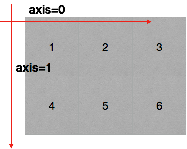
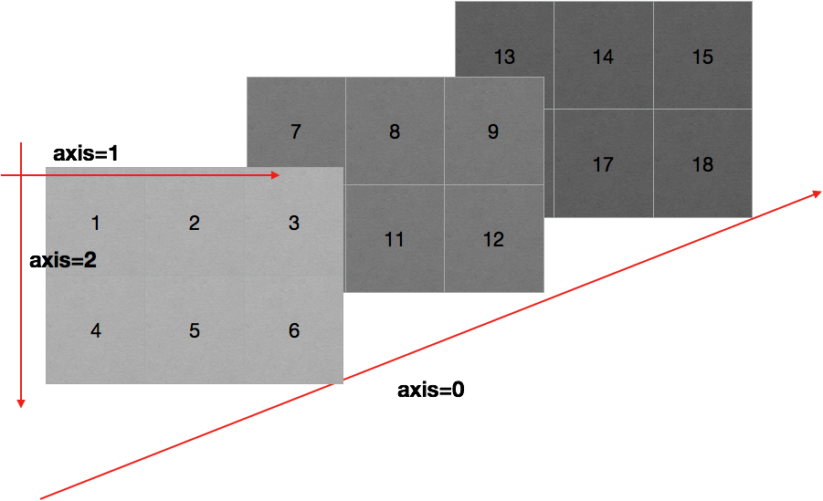
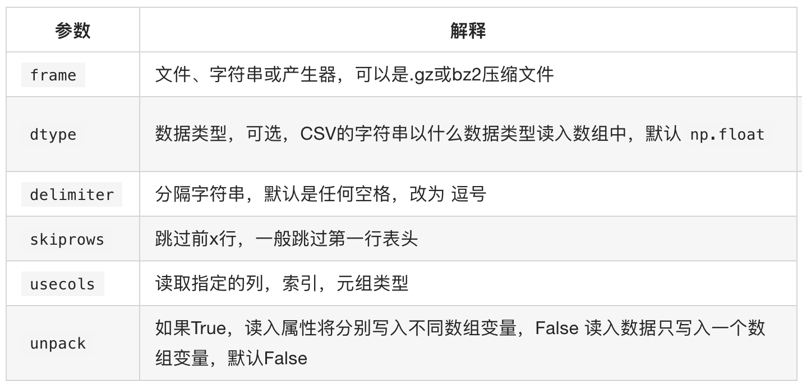
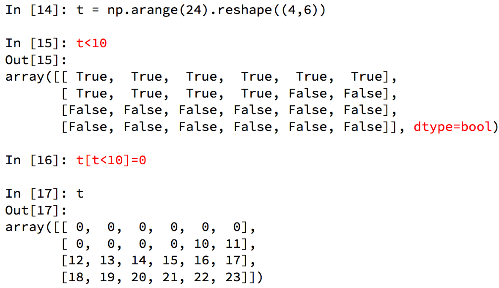
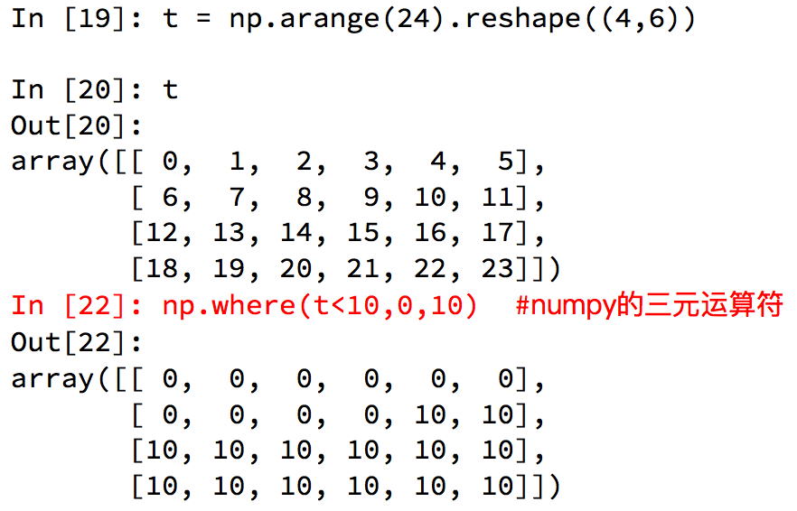
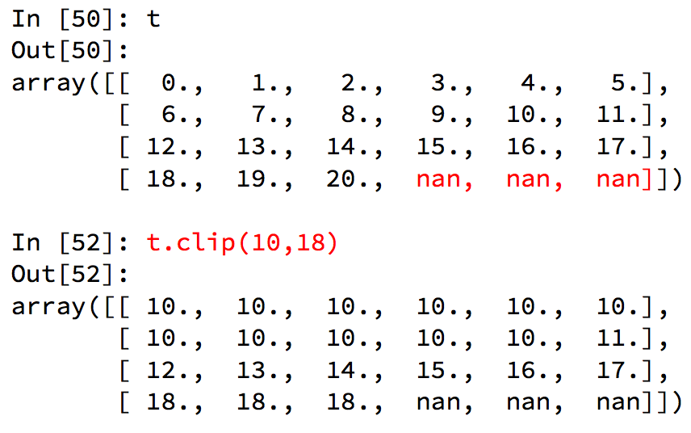
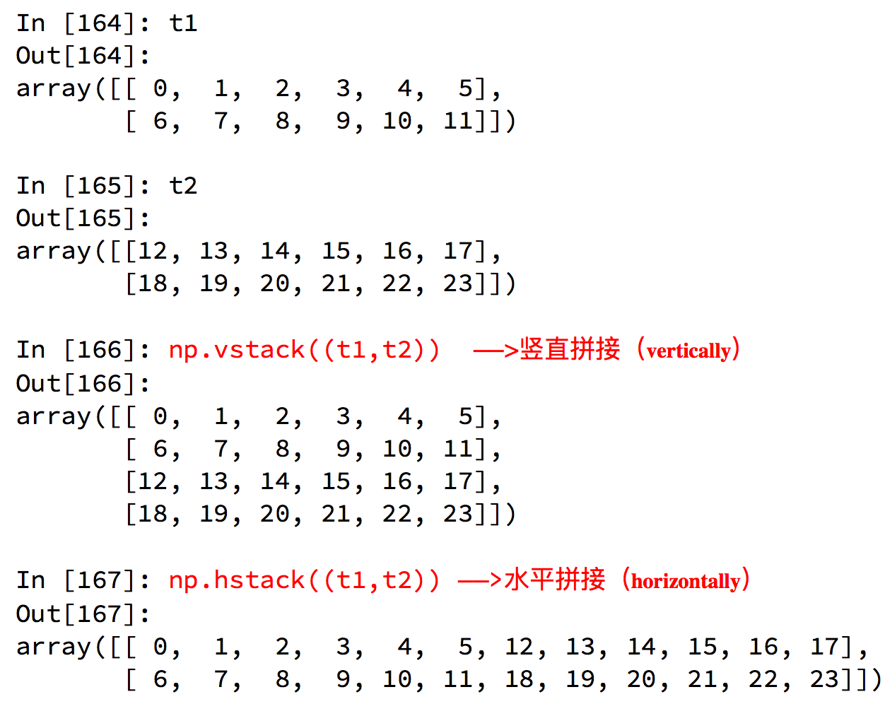
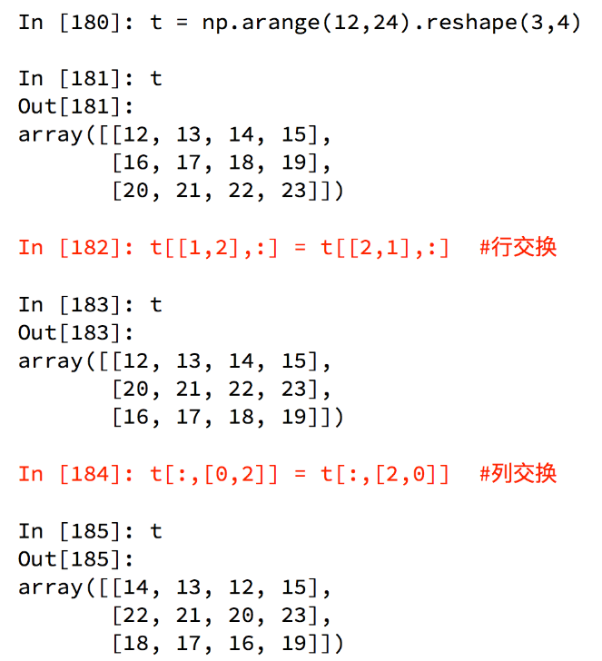
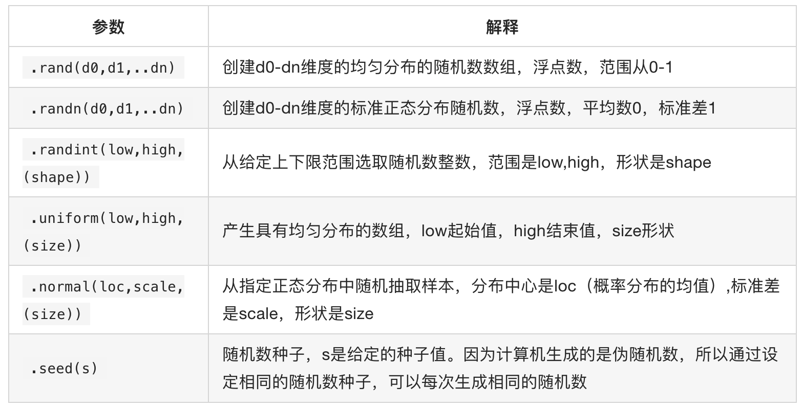
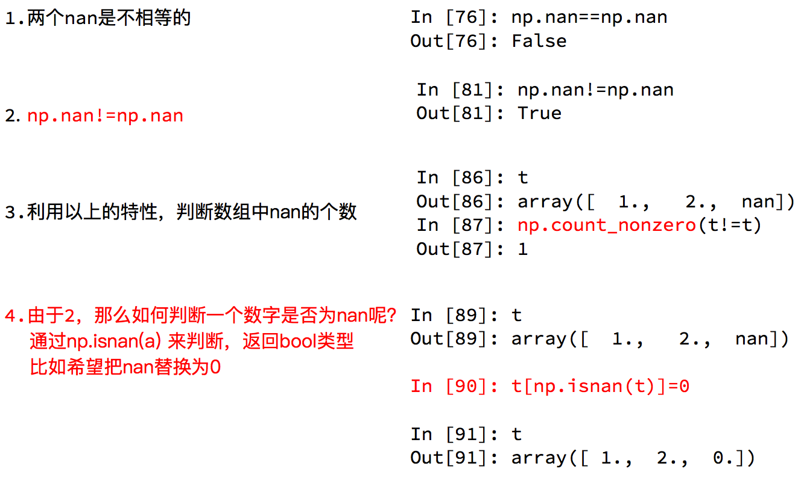

Python数据分析（二）
 CoMath
CoMath
Numpy
Numpy是一个在Python中做科学计算的基础库，重在数值计算，也是大部分PYTHON科学计算库的基础库，多用于在大型、多维数组上执行数值运算.
Numpy简单创建数组
import numpy as np
# 创建简单的列表
a = [1, 2, 3, 4] 此处输出a的话是[1,2,3,4]
# 将列表转换为数组
b = np.array(a) 此处b输出的话是[1 2 3 4]
np.array(a) = np.array(range(1,4)) = np.arange(1,4)
np,arrange([start, ] stop[, step,], ftype=None)
# 去小数
np.round(x,保留位数)
Numpy查看数组属性
数组元素个数：b.size
数组形状：b.shape
一维：列数(8,)；二维：行列(2, 4)；三维：块行列(2, 2, 4)
重塑reshape：数组一个新的形状而不改变其数据.
# 具有返回值的，不会改变原数组
numpy.reshape(a, newshape, order='C')
order : {‘C’, ‘F’, ‘A’}
# C:横着读横着写; E:竖着的竖着写; A:竖着度横着写
例.
a = np.array([[1,2,3], [4,5,6]])
print(a)
[[1 2 3]
[4 5 6]]
print(np.reshape(a, (3,2)))
[[1 2]
[3 4]
[5 6]]
数组维度：b.ndim
数组元素类型：b.dtype
快速创建N维数组的api函数
#创建10行10列的数值为浮点1的矩阵
array_one = np.ones([10, 10])
#创建10行10列的数值为浮点0的矩阵
array_zero = np.zeros([10, 10])
#降到一维：
b.flatten(order='C')
# 把a降到一维，默认是按横的方向降order:{‘C’, ‘F’,‘A’,‘K’}
b.flatten('F')
# 按竖的方向降
轴(axis)
在numpy中可以理解为方向,使用0,1,2…数字表示,对于一个一维数组,只有一个0轴,对于2维数组(shape(2,2)),有0轴和1轴,对于三维数组(shape(2,2, 3)),有0,1,2轴.


Numpy读取数据
（以后结合框架之类的读取文件大多数是从CSV文件中读取）
CSV（Comma-Separated Value,逗号分隔值文件）：由于csv便于展示,读取和写入,所以很多地方也是用csv的格式存储和传输中小型的数据,为了方便教学,我们会经常操作csv格式的文件,但是操作数据库中的数据也是很容易的实现的.
方法
np.loadtxt(fname,dtype=np.float,delimiter=None,skiprows=0,usecols=None,unpack=False)

注意 其中添加的delimiter和dtype以及unpack效果.
- delimiter：指定边界符号是什么，不指定会导致每行数据为一个整体法人字符串而报错
- dtype：默认情况下对于较大的数据将变为科学计数法的方式
- upack：默认值是False(0)，默认情况下，有多少条数据就会有多少行；为True(1)的情况下，每一列的数据会组成一行，袁术数据有多少列，加载出来就会有多少行，相当于转置的效果.
- 其他转置方法：t.transpose() t.T t.swapaxes(1,0) # 1轴和1轴互换.
Numpy索引和切片
# 取行： T[行]
# 取连续的多行： T [2:]
# 取不连续的多行： T [ [2,8,10] ] = T [[2,10,3],:]
取第2行：T [1,:]
取第三行以后所有行：T [2:,:]
#取列： T [:,0]
#取连续的多列： T [:, 2 :]
#取不连续的多列： T [:,[ 0,2]]
#去行和列，取第3行，第四列的值：
a = T [ 2, 3]
print(type(a)) # int
#取多行和多列，取第3行到第五行，第2列到第4列的结果
#去的是行和列交叉点的位置
b = T [2:5,1:4]
#取多个不相邻的点--选出来的结果是（0，0） （2，1） （2，3）
c = T [[0,2,2],[0,1,3]]
Numpy中布尔索引

# numpy中三元运算符
np.where(condition, if True, if False)

Numpy中的clip(裁剪)
numpy.clip(a, a_min, a_max, out=None)
[a_min, a_max] 里面的数被保留下来,外面的被截取为a_min或者a_max .
out：可以把结果放置在此数组中.
例如，指定间隔为[0，1]，则小于0的值赋值为0，并且大于1的值赋值为1.
补充：int类型的情况下无法赋值为nan，所以需要将类型改为float.
t.astype(float)
t[x,y]=np.nan

数组的拼接：
np.vstack((t1,t2)) # 竖直拼接
np.hstack((t1,t2)) # 水平拼接

数组的行列交换

Numpy更多好用的方法
- 获取最大值最小值的位置
- np.argmax(t,axis=0)
- np.argmin(t,axis=1)
- 创建一个全0的数组: np.zeros((3,4))
- 创建一个全1的数组:np.ones((3,4))
- 创建一个对角线为1的正方形数组(方阵)：np.eye(3)
Numpy生成随机数

Numpy中的注意点copy和view
- a=b 完全不复制，a和b相互影响
- a = b[:],视图的操作，一种切片，会创建新的对象a，但是a的数据完全由b保管，他们两个的数据变化是一致的，
- a = b.copy(),复制，a和b互不影响
Numpy中的nan和inf（都是float类型）
nan(NAN,Nan):not a number表示不是一个数字.
什么时候numpy中会出现nan
当我们读取本地的文件为float的时候，如果有缺失，就会出现nan．当做了一个不合适的计算的时候(比如无穷大(inf)减去无穷大)．
inf(-inf,inf):infinity,inf表示正无穷，-inf表示负无穷
什么时候回出现inf包括（-inf，+inf）
比如一个数字除以0，（python中直接会报错，numpy中是一个inf或者-inf）Numpy中的nan的注意点

t.sum(axis=None) #求和
t.mean(a,axis=None) # 均值 受离群点的影响较大
np.median(t,axis=None) # 中值：
t.max(axis=None) # 最大值：
t.min(axis=None) # 最小值：
np.ptp(t,axis=None) # 极值 即最大值和最小值只差
t.std(axis=None) # 标准差
ndarry缺失值填充均值
t中存在nan值，如何操作把其中的nan填充为每一列的均值
t = array([[ 0., 1., 2., 3., 4., 5.],
[ 6., 7., nan, 9., 10., 11.],
[ 12., 13., 14., nan, 16., 17.],
[ 18., 19., 20., 21., 22., 23.]])
def fill_ndarray(t1):
#遍历每一列
for i in range(t1.shape[1]):
temp_col = t1[:,i] #当前的一列
nan_num = np.count_nonzero(temp_col!=temp_col)
if nan_num != 0: #不为0，说明当前这一列中有nan
temp_not_nan_col = temp_col[temp_col==temp_col] #当前一列不为nan的array
# 选中当前为nan的位置，把值赋值为不为nan的均值
temp_col[np.isnan(temp_col)] = temp_not_nan_col.mean()
return t1
if __name__ == '__main__':
t1 = np.arange(12).reshape((4, 3)).astype("float")
t1[1, 1:] = np.nan
print(t1)
t1 = fill_ndarray(t1)
print(t1)
输出结果
[[ 0. 1. 2.] [[ 0. 1. 2.]
[ 3. nan nan] [ 3. 6. 7.]
[ 6. 7. 8.] [ 6. 7. 8.]
[ 9. 10. 11.]] [ 9. 10. 11.]]
Xin态好先生
机会是给有准备的人的.